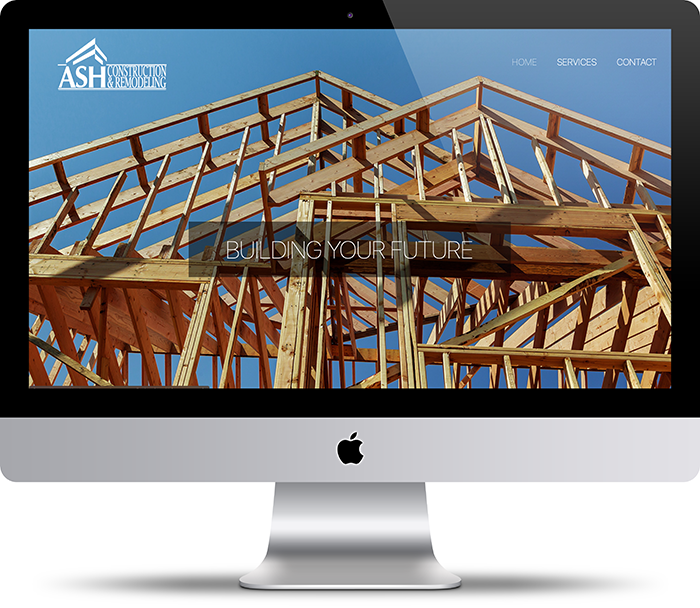
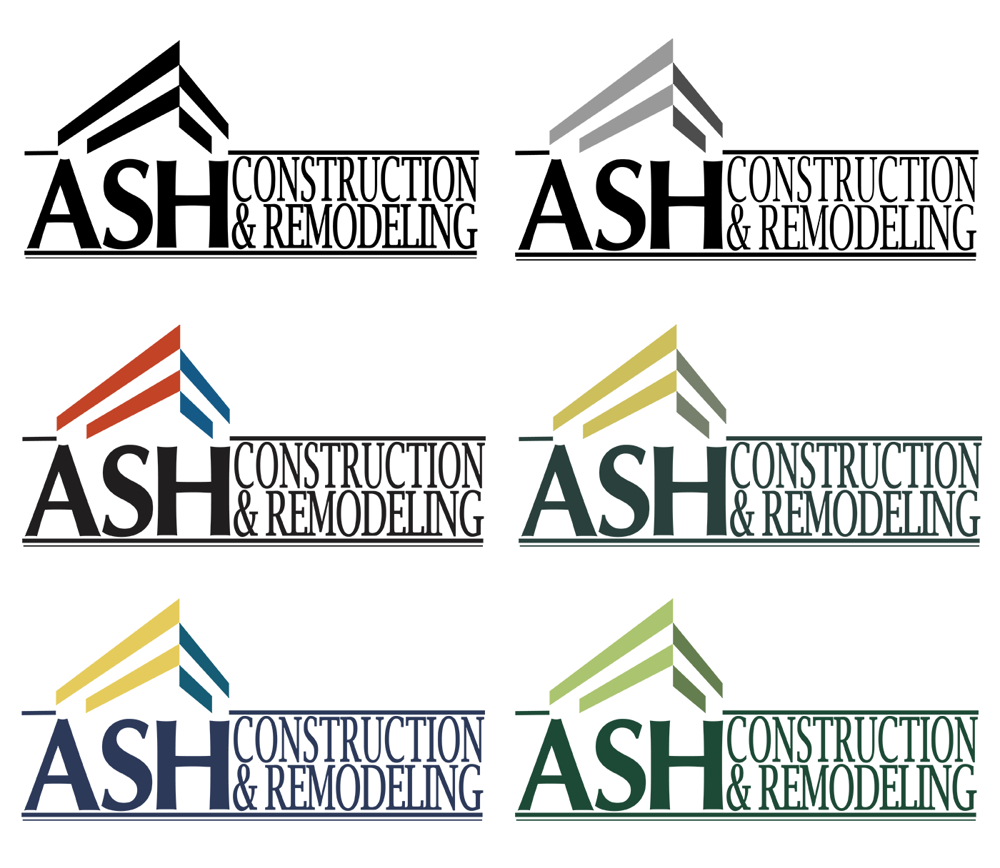
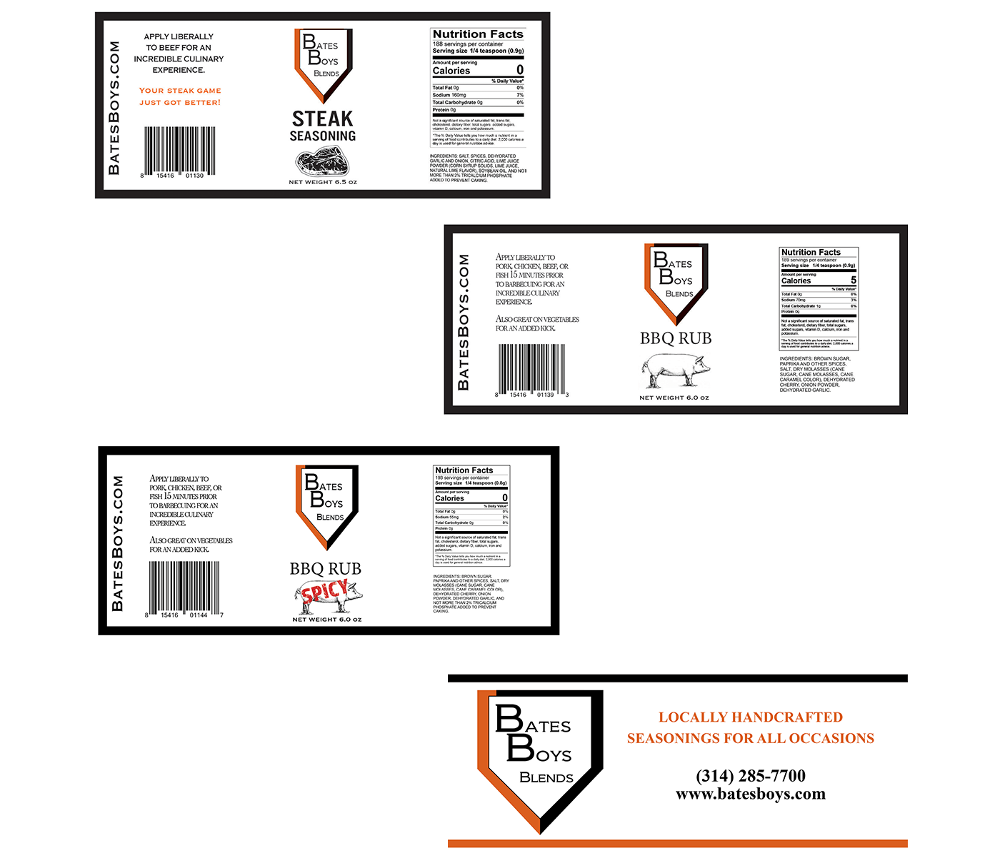

Work
Sites

ASH Construction & Remodeling
A small business, originally known as Sanders Construction, located in the Chicagoland area requested a user-friendly web presence to attract future clients. We chose to move forward with a sleek and responsive 3-page custom site built off semantic HTML, CSS, and vanilla JavaScript.
VISIT PAGE
Designs

ASH Construction & Remodeling
In addition to ASH Construction's new website, they also requested a new logo design under their new image. Sketched and designed using Adode Illustrator.
VIEW COMP

Bates Boys Blends
Bates Boys Blends is a small business located in St. Charles, MO. The company was in need of new product labels and a banner for upcoming markets and distribution. The layout, typography, and content were all developed and approved under the direction of the business owner.
VIEW COMP